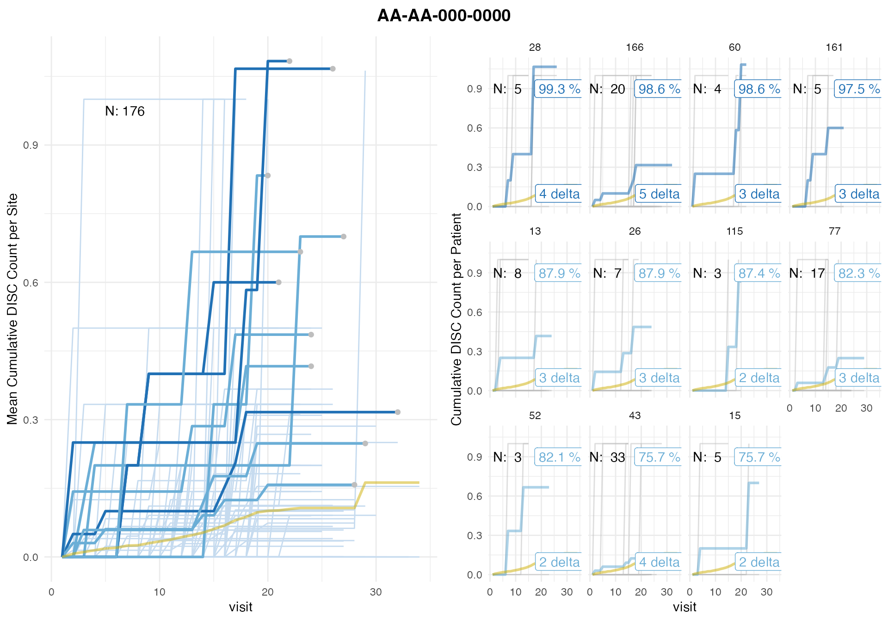

Binary Event Over-Reporting - Subject Discontinuation
Source:vignettes/discontinuity.Rmd
discontinuity.RmdLoad
suppressPackageStartupMessages(library(tibble))
suppressPackageStartupMessages(library(knitr))
suppressPackageStartupMessages(library(simaerep))
suppressPackageStartupMessages(library(dplyr))
suppressPackageStartupMessages(library(clindata))
rawplus_studcomp <- clindata::rawplus_studcomp
rawplus_visdt <- clindata::rawplus_visdtIntroduction
This vignette will explore the process and viability of using the {simaerep} algorithm to detect patient discontinuities and flag sites where there are more discontinuations than expected.
Patient Discontinuations
A discontinuation occurs any time a patient leaves a clinical trial for any reason. It is important to minimize patient discontinuation in order to maintain patient participation and therefore robust data collection in clinical studies.
Sample Data
The sample data is from the open source r package {clindata}. Sampled data is from data frames rawplus_visdt and rawplus_studcomp.
Implementation
Cumulative vs Binary events
The main difference between detecting cumulative clinical events such as AEs and and binary events such as discontinuations is that with cumulative events there can be multiple occurrences per patient, but with binary events there can only be one event per patient. This difference needs to be addressed and the data must be formulated into a version that {simaerep} can process, otherwise the algorithm’s output will not make sense. The other major difference is that AE detection is focused on determining sites below the norm (under-reporting), but with discontinuation detection we want to look for sites that are above the norm (over-reporting).
Data Preparation
rawplus_studycomp contains one entry for each patient
that has discontinued. We interpret column mincreated_dts
to be the timestamp the discontinuation has been entered and therefore
to be a good proxy for the actual discontinuation date.
rawplus_studcomp## # A tibble: 133 × 31
## studyid siteid invid scrnid subjid subjectid datapagename datapageid
## <chr> <chr> <chr> <chr> <chr> <chr> <chr> <chr>
## 1 AA-AA-000-0000 58 0X091 020 1236 X0911236-0… Study Compl… 1
## 2 AA-AA-000-0000 128 0X149 123 1023 X1491023-1… Study Compl… 1
## 3 AA-AA-000-0000 155 0X125 058 1346 X1251346-0… Study Compl… 1
## 4 AA-AA-000-0000 43 0X159 113 0760 X1590760-1… Study Compl… 1
## 5 AA-AA-000-0000 127 0X043 058 0854 X0430854-0… Study Compl… 1
## 6 AA-AA-000-0000 71 0X083 142 0561 X0830561-1… Study Compl… 1
## 7 AA-AA-000-0000 140 0X161 091 0290 X1610290-0… Study Compl… 1
## 8 AA-AA-000-0000 53 0X015 142 1127 X0151127-1… Study Compl… 1
## 9 AA-AA-000-0000 71 0X083 020 1152 X0831152-0… Study Compl… 1
## 10 AA-AA-000-0000 184 0X123 123 0720 X1230720-1… Study Compl… 1
## # ℹ 123 more rows
## # ℹ 23 more variables: foldername <chr>, instancename <chr>, recordid <chr>,
## # record_dt <chr>, recordposition <dbl>, mincreated_dts <chr>,
## # maxupdated_dts <chr>, compyn <chr>, compreas <chr>, subjid_nsv <chr>,
## # scrnid_nsv <chr>, subjinit_nsv <chr>, invid_nsv <chr>, subject_nsv <chr>,
## # instanceid_nsv <dbl>, folder_nsv <chr>, folderseq_nsv <dbl>,
## # compyn_std_nsv <chr>, compreas_std_nsv <chr>, compfu_nsv <chr>, …
df_disc <- rawplus_studcomp %>%
rename(date = mincreated_dts) %>%
mutate(event = "disc") %>%
distinct(studyid, siteid, subjid, date, event)
df_disc %>%
head() %>%
knitr::kable()| studyid | siteid | subjid | date | event |
|---|---|---|---|---|
| AA-AA-000-0000 | 58 | 1236 | 2009-07-08T05:50:04 | disc |
| AA-AA-000-0000 | 128 | 1023 | 2016-04-23T01:48:05 | disc |
| AA-AA-000-0000 | 155 | 1346 | 2018-10-23T05:37:28 | disc |
| AA-AA-000-0000 | 43 | 0760 | 2004-10-14T06:54:46 | disc |
| AA-AA-000-0000 | 127 | 0854 | 2011-09-30T11:51:19 | disc |
| AA-AA-000-0000 | 71 | 0561 | 2015-12-15T02:17:47 | disc |
We continue to build another event table for visits and horizontally bind both event tables
df_vs <- rawplus_visdt %>%
rename(date = visit_dt) %>%
mutate(event = "visit") %>%
# We ignore visits that have no date
filter(! is.na(date)) %>%
# We are not interested in same day visits
distinct(studyid, siteid, subjid, date, event)
df_events <- bind_rows(df_vs, df_disc) %>%
arrange(studyid, siteid, subjid, date)
df_events %>%
filter(subjid == "0002") %>%
knitr::kable()| studyid | siteid | subjid | date | event |
|---|---|---|---|---|
| AA-AA-000-0000 | 76 | 0002 | 2017-04-03 | visit |
| AA-AA-000-0000 | 76 | 0002 | 2017-04-10 | visit |
| AA-AA-000-0000 | 76 | 0002 | 2017-04-18 | visit |
| AA-AA-000-0000 | 76 | 0002 | 2017-05-05 | visit |
| AA-AA-000-0000 | 76 | 0002 | 2017-05-22 | visit |
| AA-AA-000-0000 | 76 | 0002 | 2017-06-05T19:31:19 | disc |
We add the cumulative event counts and aggregate on visit level to prepare data in a format that is ready to use by {simaerep}.
df_visit <- df_events %>%
mutate(
cum_visit = cumsum(ifelse(event == "visit", 1, 0)),
cum_disc = cumsum(ifelse(event == "disc", 1, 0)),
.by = c("studyid", "siteid", "subjid")
) %>%
# aggregate counts on visit level
summarise(
cum_disc = max(cum_disc),
.by = c("studyid", "siteid", "subjid", "cum_visit")
) %>%
# remove patients with 0 visits
filter(max(cum_visit) > 0 , .by = c("studyid", "siteid", "subjid"))
df_visit %>%
filter(subjid == "0002") %>%
knitr::kable()| studyid | siteid | subjid | cum_visit | cum_disc |
|---|---|---|---|---|
| AA-AA-000-0000 | 76 | 0002 | 1 | 0 |
| AA-AA-000-0000 | 76 | 0002 | 2 | 0 |
| AA-AA-000-0000 | 76 | 0002 | 3 | 0 |
| AA-AA-000-0000 | 76 | 0002 | 4 | 0 |
| AA-AA-000-0000 | 76 | 0002 | 5 | 1 |
Sampling Correction
Notice that patient 0002 only has 5 entries, due to their early departure. The limited records of discontinued patients will create a problem with {simaerep}’s sampling algorithm, as the algorithm samples patients that have at least the same number of visits as the patient that is being replaced. This leads to an survivor bias where discontinued patients, since they have less visits, are unable to be used as replacement values for patients who had more visits.
To address this we would have to use the planned visits instead of the occurred visits, but {clindata} does not provide those.
As an approximation to the planned visits the discontinued patient’s records will be artificially inflated to 15 visits, a cut off point that includes roughly 80% of the patients not discontinued have reached during the study. This change allows for the proper sampling to occur and for the production of correct results.
subj_disc <- df_visit %>%
filter(cum_disc == 1) %>%
pull(subjid) %>%
unique()
df_fill <- df_visit %>%
distinct(studyid, siteid, subjid) %>%
filter(subjid %in% subj_disc) %>%
cross_join(
tibble(
cum_visit = seq(1, 15),
disc_fill = 1
)
)
df_visit_disc <- df_visit %>%
filter(subjid %in% subj_disc) %>%
full_join(
df_fill,
by = c("studyid", "siteid" ,"subjid" ,"cum_visit")
) %>%
mutate(
cum_disc = coalesce(cum_disc, disc_fill)
) %>%
select(- disc_fill) %>%
arrange(subjid, cum_visit)
df_visit_not_disc <- df_visit %>%
filter(! subjid %in% subj_disc)
df_visit_fill <- bind_rows(df_visit_disc, df_visit_not_disc) %>%
rename(n_disc = cum_disc)
# Displays patient 0002, modified to 15 visits
df_visit_fill %>%
filter(subjid == "0002") %>%
arrange(cum_visit) %>%
kable()| studyid | siteid | subjid | cum_visit | n_disc |
|---|---|---|---|---|
| AA-AA-000-0000 | 76 | 0002 | 1 | 0 |
| AA-AA-000-0000 | 76 | 0002 | 2 | 0 |
| AA-AA-000-0000 | 76 | 0002 | 3 | 0 |
| AA-AA-000-0000 | 76 | 0002 | 4 | 0 |
| AA-AA-000-0000 | 76 | 0002 | 5 | 1 |
| AA-AA-000-0000 | 76 | 0002 | 6 | 1 |
| AA-AA-000-0000 | 76 | 0002 | 7 | 1 |
| AA-AA-000-0000 | 76 | 0002 | 8 | 1 |
| AA-AA-000-0000 | 76 | 0002 | 9 | 1 |
| AA-AA-000-0000 | 76 | 0002 | 10 | 1 |
| AA-AA-000-0000 | 76 | 0002 | 11 | 1 |
| AA-AA-000-0000 | 76 | 0002 | 12 | 1 |
| AA-AA-000-0000 | 76 | 0002 | 13 | 1 |
| AA-AA-000-0000 | 76 | 0002 | 14 | 1 |
| AA-AA-000-0000 | 76 | 0002 | 15 | 1 |
{simaerep}
Since discontinuities are inherently more rare than AEs, it is necessary to run {simaerep} with a larger bootstrap iteration so that the results in between runs are more stable. The following code is run with 50,000 bootstrap repetitions, which is much higher than {simaereps}’s default of 1,000. This change allows the algorithm to provide a more stable and therefore more accurate model.
Here is the output of a {simaerep} call on df_visit modified for discontinuities.
discrep <- simaerep(
df_visit_fill,
r = 50000,
event_names = "disc",
col_names = list(
study_id = "studyid",
site_id = "siteid",
patient_id = "subjid",
visit = "cum_visit"
)
)
discrep## simaerep object:
## ----------------
## Plot results using plot() generic.
## Full results available in "df_eval".
##
## Summary:
## Number of sites: 176
## Number of studies: 1
##
## Multiplicity correction applied to '*_prob' columns.
##
## First 10 rows of df_eval:
## # A tibble: 10 × 10
## studyid siteid disc_count disc_per_visit_site visits n_pat
## <chr> <chr> <dbl> <dbl> <dbl> <int>
## 1 AA-AA-000-0000 10 2 0.00494 405 20
## 2 AA-AA-000-0000 100 0 0 41 2
## 3 AA-AA-000-0000 101 0 0 63 3
## 4 AA-AA-000-0000 102 0 0 68 3
## 5 AA-AA-000-0000 103 0 0 86 4
## 6 AA-AA-000-0000 104 2 0.0106 188 9
## 7 AA-AA-000-0000 105 0 0 65 3
## 8 AA-AA-000-0000 106 0 0 69 3
## 9 AA-AA-000-0000 107 0 0 63 3
## 10 AA-AA-000-0000 109 0 0 89 4
## # ℹ 4 more variables: disc_per_visit_study <dbl>, disc_prob_no_mult <dbl>,
## # disc_prob <dbl>, disc_delta <dbl>
plot(discrep)## study = NULL, defaulting to study:AA-AA-000-0000
Top 100 out of 176 sites by discontinuation probability without multiplicity correction in descending order.
discrep$df_eval %>%
mutate(disc_ratio_per_pat = disc_count / n_pat) %>%
select(
siteid,
disc_count,
visits,
n_pat,
disc_ratio_per_pat,
disc_per_visit_site,
disc_per_visit_study,
disc_prob_no_mult,
disc_prob,
disc_delta
) %>%
arrange(desc(disc_prob_no_mult)) %>%
mutate(rank = row_number(), .before = siteid) %>%
head(100) %>%
knitr::kable(digits = 3)| rank | siteid | disc_count | visits | n_pat | disc_ratio_per_pat | disc_per_visit_site | disc_per_visit_study | disc_prob_no_mult | disc_prob | disc_delta |
|---|---|---|---|---|---|---|---|---|---|---|
| 1 | 28 | 4 | 99 | 5 | 0.800 | 0.040 | 0.003 | 1.000 | 0.993 | 3.746 |
| 2 | 166 | 6 | 470 | 20 | 0.300 | 0.013 | 0.002 | 1.000 | 0.986 | 5.141 |
| 3 | 60 | 3 | 78 | 4 | 0.750 | 0.038 | 0.002 | 1.000 | 0.986 | 2.817 |
| 4 | 161 | 3 | 89 | 5 | 0.600 | 0.034 | 0.002 | 0.999 | 0.975 | 2.787 |
| 5 | 26 | 3 | 143 | 7 | 0.429 | 0.021 | 0.003 | 0.996 | 0.879 | 2.641 |
| 6 | 13 | 3 | 158 | 8 | 0.375 | 0.019 | 0.002 | 0.996 | 0.879 | 2.639 |
| 7 | 115 | 2 | 54 | 3 | 0.667 | 0.037 | 0.002 | 0.995 | 0.874 | 1.868 |
| 8 | 77 | 4 | 365 | 17 | 0.235 | 0.011 | 0.002 | 0.992 | 0.823 | 3.172 |
| 9 | 52 | 2 | 53 | 3 | 0.667 | 0.038 | 0.003 | 0.991 | 0.821 | 1.833 |
| 10 | 15 | 2 | 108 | 5 | 0.400 | 0.019 | 0.002 | 0.985 | 0.757 | 1.799 |
| 11 | 43 | 5 | 719 | 33 | 0.152 | 0.007 | 0.002 | 0.985 | 0.757 | 3.536 |
| 12 | 165 | 1 | 16 | 1 | 1.000 | 0.062 | 0.001 | 0.977 | 0.715 | 0.977 |
| 13 | 154 | 1 | 16 | 1 | 1.000 | 0.062 | 0.001 | 0.977 | 0.715 | 0.977 |
| 14 | 89 | 2 | 127 | 6 | 0.333 | 0.016 | 0.002 | 0.974 | 0.715 | 1.735 |
| 15 | 114 | 2 | 161 | 7 | 0.286 | 0.012 | 0.002 | 0.973 | 0.715 | 1.734 |
| 16 | 174 | 2 | 124 | 6 | 0.333 | 0.016 | 0.002 | 0.973 | 0.715 | 1.720 |
| 17 | 159 | 1 | 17 | 1 | 1.000 | 0.059 | 0.002 | 0.971 | 0.715 | 0.971 |
| 18 | 48 | 1 | 18 | 1 | 1.000 | 0.056 | 0.002 | 0.970 | 0.715 | 0.970 |
| 19 | 170 | 4 | 626 | 27 | 0.148 | 0.006 | 0.002 | 0.969 | 0.715 | 2.790 |
| 20 | 175 | 1 | 20 | 1 | 1.000 | 0.050 | 0.002 | 0.968 | 0.715 | 0.968 |
| 21 | 190 | 2 | 154 | 7 | 0.286 | 0.013 | 0.002 | 0.962 | 0.681 | 1.672 |
| 22 | 34 | 2 | 172 | 8 | 0.250 | 0.012 | 0.002 | 0.951 | 0.620 | 1.633 |
| 23 | 104 | 2 | 188 | 9 | 0.222 | 0.011 | 0.002 | 0.948 | 0.620 | 1.620 |
| 24 | 71 | 2 | 217 | 10 | 0.200 | 0.009 | 0.002 | 0.948 | 0.620 | 1.620 |
| 25 | 67 | 2 | 223 | 11 | 0.182 | 0.009 | 0.002 | 0.944 | 0.608 | 1.610 |
| 26 | 145 | 1 | 15 | 1 | 1.000 | 0.067 | 0.004 | 0.941 | 0.600 | 0.941 |
| 27 | 50 | 2 | 192 | 8 | 0.250 | 0.010 | 0.002 | 0.936 | 0.581 | 1.570 |
| 28 | 46 | 1 | 36 | 2 | 0.500 | 0.028 | 0.003 | 0.910 | 0.453 | 0.909 |
| 29 | 182 | 1 | 37 | 2 | 0.500 | 0.027 | 0.003 | 0.902 | 0.453 | 0.899 |
| 30 | 185 | 1 | 48 | 2 | 0.500 | 0.021 | 0.002 | 0.889 | 0.453 | 0.885 |
| 31 | 3 | 1 | 39 | 2 | 0.500 | 0.026 | 0.003 | 0.888 | 0.453 | 0.885 |
| 32 | 130 | 1 | 63 | 3 | 0.333 | 0.016 | 0.002 | 0.885 | 0.453 | 0.880 |
| 33 | 116 | 1 | 57 | 3 | 0.333 | 0.018 | 0.002 | 0.881 | 0.453 | 0.877 |
| 34 | 16 | 1 | 56 | 3 | 0.333 | 0.018 | 0.002 | 0.881 | 0.453 | 0.876 |
| 35 | 140 | 5 | 1456 | 69 | 0.072 | 0.003 | 0.002 | 0.881 | 0.453 | 2.382 |
| 36 | 179 | 1 | 106 | 4 | 0.250 | 0.009 | 0.001 | 0.879 | 0.453 | 0.874 |
| 37 | 64 | 1 | 82 | 4 | 0.250 | 0.012 | 0.002 | 0.879 | 0.453 | 0.874 |
| 38 | 53 | 1 | 65 | 3 | 0.333 | 0.015 | 0.002 | 0.877 | 0.453 | 0.872 |
| 39 | 144 | 1 | 80 | 4 | 0.250 | 0.013 | 0.002 | 0.875 | 0.453 | 0.870 |
| 40 | 173 | 3 | 602 | 27 | 0.111 | 0.005 | 0.002 | 0.873 | 0.453 | 1.752 |
| 41 | 40 | 1 | 57 | 3 | 0.333 | 0.018 | 0.002 | 0.873 | 0.453 | 0.867 |
| 42 | 96 | 1 | 82 | 4 | 0.250 | 0.012 | 0.002 | 0.869 | 0.452 | 0.862 |
| 43 | 62 | 3 | 711 | 34 | 0.088 | 0.004 | 0.002 | 0.865 | 0.450 | 1.727 |
| 44 | 91 | 2 | 366 | 16 | 0.125 | 0.005 | 0.002 | 0.859 | 0.450 | 1.336 |
| 45 | 168 | 1 | 59 | 3 | 0.333 | 0.017 | 0.003 | 0.859 | 0.450 | 0.852 |
| 46 | 81 | 1 | 78 | 4 | 0.250 | 0.013 | 0.002 | 0.856 | 0.450 | 0.849 |
| 47 | 124 | 1 | 85 | 4 | 0.250 | 0.012 | 0.002 | 0.849 | 0.434 | 0.840 |
| 48 | 163 | 1 | 72 | 3 | 0.333 | 0.014 | 0.002 | 0.839 | 0.412 | 0.831 |
| 49 | 10 | 2 | 405 | 20 | 0.100 | 0.005 | 0.002 | 0.836 | 0.412 | 1.277 |
| 50 | 127 | 1 | 102 | 5 | 0.200 | 0.010 | 0.002 | 0.832 | 0.409 | 0.819 |
| 51 | 25 | 1 | 66 | 3 | 0.333 | 0.015 | 0.003 | 0.828 | 0.408 | 0.818 |
| 52 | 135 | 1 | 109 | 5 | 0.200 | 0.009 | 0.002 | 0.823 | 0.407 | 0.809 |
| 53 | 128 | 1 | 95 | 5 | 0.200 | 0.011 | 0.002 | 0.822 | 0.407 | 0.808 |
| 54 | 39 | 1 | 92 | 4 | 0.250 | 0.011 | 0.002 | 0.814 | 0.393 | 0.799 |
| 55 | 131 | 1 | 141 | 7 | 0.143 | 0.007 | 0.001 | 0.808 | 0.387 | 0.790 |
| 56 | 86 | 2 | 477 | 22 | 0.091 | 0.004 | 0.002 | 0.798 | 0.366 | 1.169 |
| 57 | 184 | 1 | 104 | 5 | 0.200 | 0.010 | 0.002 | 0.788 | 0.345 | 0.767 |
| 58 | 58 | 2 | 459 | 20 | 0.100 | 0.004 | 0.002 | 0.780 | 0.337 | 1.119 |
| 59 | 29 | 1 | 142 | 7 | 0.143 | 0.007 | 0.002 | 0.778 | 0.337 | 0.752 |
| 60 | 134 | 1 | 130 | 6 | 0.167 | 0.008 | 0.002 | 0.773 | 0.333 | 0.748 |
| 61 | 186 | 1 | 119 | 5 | 0.200 | 0.008 | 0.002 | 0.751 | 0.281 | 0.722 |
| 62 | 157 | 1 | 155 | 7 | 0.143 | 0.006 | 0.002 | 0.733 | 0.252 | 0.698 |
| 63 | 83 | 1 | 142 | 7 | 0.143 | 0.007 | 0.002 | 0.732 | 0.252 | 0.696 |
| 64 | 59 | 1 | 180 | 8 | 0.125 | 0.006 | 0.002 | 0.714 | 0.213 | 0.670 |
| 65 | 4 | 1 | 196 | 9 | 0.111 | 0.005 | 0.002 | 0.668 | 0.102 | 0.606 |
| 66 | 155 | 1 | 230 | 10 | 0.100 | 0.004 | 0.002 | 0.648 | 0.060 | 0.576 |
| 67 | 51 | 1 | 237 | 11 | 0.091 | 0.004 | 0.002 | 0.615 | 0.000 | 0.524 |
| 68 | 94 | 2 | 768 | 36 | 0.056 | 0.003 | 0.002 | 0.608 | 0.000 | 0.655 |
| 69 | 69 | 1 | 271 | 12 | 0.083 | 0.004 | 0.002 | 0.574 | 0.000 | 0.459 |
| 70 | 63 | 1 | 240 | 10 | 0.100 | 0.004 | 0.002 | 0.570 | 0.000 | 0.455 |
| 71 | 92 | 1 | 312 | 15 | 0.067 | 0.003 | 0.002 | 0.561 | 0.000 | 0.432 |
| 72 | 76 | 1 | 273 | 12 | 0.083 | 0.004 | 0.002 | 0.547 | 0.000 | 0.414 |
| 73 | 167 | 1 | 321 | 15 | 0.067 | 0.003 | 0.002 | 0.536 | 0.000 | 0.393 |
| 74 | 61 | 1 | 346 | 15 | 0.067 | 0.003 | 0.002 | 0.460 | 0.000 | 0.245 |
| 75 | 54 | 1 | 390 | 17 | 0.059 | 0.003 | 0.002 | 0.436 | 0.000 | 0.189 |
| 76 | 172 | 1 | 601 | 28 | 0.036 | 0.002 | 0.002 | 0.343 | 0.000 | -0.053 |
| 77 | 56 | 1 | 545 | 25 | 0.040 | 0.002 | 0.002 | 0.334 | 0.000 | -0.071 |
| 78 | 143 | 1 | 601 | 28 | 0.036 | 0.002 | 0.002 | 0.318 | 0.000 | -0.120 |
| 79 | 132 | 0 | 34 | 1 | 0.000 | 0.000 | 0.000 | 0.000 | 0.000 | 0.000 |
| 80 | 171 | 0 | 33 | 1 | 0.000 | 0.000 | 0.000 | 0.000 | 0.000 | 0.000 |
| 81 | 126 | 0 | 21 | 1 | 0.000 | 0.000 | 0.001 | -0.031 | 0.000 | -0.031 |
| 82 | 14 | 0 | 21 | 1 | 0.000 | 0.000 | 0.001 | -0.031 | 0.000 | -0.031 |
| 83 | 42 | 0 | 21 | 1 | 0.000 | 0.000 | 0.001 | -0.031 | 0.000 | -0.031 |
| 84 | 36 | 0 | 21 | 1 | 0.000 | 0.000 | 0.001 | -0.031 | 0.000 | -0.031 |
| 85 | 33 | 0 | 21 | 1 | 0.000 | 0.000 | 0.002 | -0.032 | 0.000 | -0.032 |
| 86 | 158 | 0 | 21 | 1 | 0.000 | 0.000 | 0.002 | -0.032 | 0.000 | -0.032 |
| 87 | 45 | 0 | 21 | 1 | 0.000 | 0.000 | 0.002 | -0.032 | 0.000 | -0.032 |
| 88 | 99 | 0 | 20 | 1 | 0.000 | 0.000 | 0.002 | -0.032 | 0.000 | -0.032 |
| 89 | 180 | 0 | 21 | 1 | 0.000 | 0.000 | 0.002 | -0.032 | 0.000 | -0.032 |
| 90 | 38 | 0 | 21 | 1 | 0.000 | 0.000 | 0.002 | -0.032 | 0.000 | -0.032 |
| 91 | 20 | 0 | 20 | 1 | 0.000 | 0.000 | 0.002 | -0.032 | 0.000 | -0.032 |
| 92 | 110 | 0 | 21 | 1 | 0.000 | 0.000 | 0.002 | -0.033 | 0.000 | -0.033 |
| 93 | 6 | 0 | 19 | 1 | 0.000 | 0.000 | 0.002 | -0.036 | 0.000 | -0.036 |
| 94 | 78 | 0 | 22 | 1 | 0.000 | 0.000 | 0.002 | -0.041 | 0.000 | -0.041 |
| 95 | 55 | 0 | 22 | 1 | 0.000 | 0.000 | 0.002 | -0.042 | 0.000 | -0.042 |
| 96 | 87 | 0 | 22 | 1 | 0.000 | 0.000 | 0.002 | -0.042 | 0.000 | -0.042 |
| 97 | 66 | 0 | 22 | 1 | 0.000 | 0.000 | 0.002 | -0.042 | 0.000 | -0.042 |
| 98 | 123 | 0 | 22 | 1 | 0.000 | 0.000 | 0.002 | -0.043 | 0.000 | -0.043 |
| 99 | 65 | 0 | 22 | 1 | 0.000 | 0.000 | 0.002 | -0.043 | 0.000 | -0.043 |
| 100 | 117 | 0 | 23 | 1 | 0.000 | 0.000 | 0.002 | -0.045 | 0.000 | -0.045 |
We find 4 sites that have a high reporting probability (>= 99% w/o multiplicity correction and >= 95% with) for discontinuations. As is expected the discontinuation ratio per patient which is a common monitoring metric is a poor indicator for which sites have high over-reporting probability as ratios from small samples tend to have more variability and are more likely to have outlier.
Summary
In order to use {simaerep} for binary events such as patient discontinuation we have to account for survival bias by using planned visits rather than actual visits. Then {simaerep} can produce very plausible over-reporting probabilities with the same advantages we expect {simaerep} to have over parametric statistical methods for other event reporting metrics.